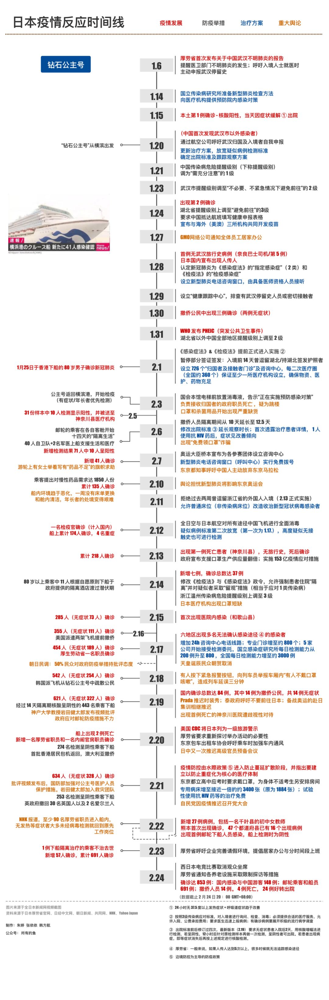

日本疫情蔓延，东京奥运会还能如期开吗？
原文链接 备份链接 按照原计划，今年奥运圣火传递活动将在3月12日从希腊开始，3月26日来到日本，7月24日东京奥运会将开幕，这些安排会否受到影响，取决于日本政府对于疫情的控制 2020年2月15日，东京奥运会圣火传递大使石原里美（右）在 …

Keypoint：
《感染症法》/《检疫法》
1 月 28 日，日本内阁决定，将新型冠状病毒传染病指定为基于《感染症法》的“指定感染症”和基于《检疫法》的“检疫感染症”。考虑到措施调整可能给各界带来的影响，提供了十天的通知期限，计划于 2 月 7 日正式实施；后因 WHO 宣布突发公共卫生事件 （PHEIC） ，日期提前至 2 月 1 日。
这两部法律为诸多疫情应对措施提供了法律依据和执行参照，对信息收集和公布、健康诊断和就业限制、消毒措施等种种均作出明确规范。按照《感染症法》，传染病被分为三类，埃博拉病毒、出血热、鼠疫等为 1 类，而新冠肺炎被归为与“非典”相同的 2 类——政府被允许对患者或疑似展开行动调查、安排住院以及对其持有物进行消毒。
值得注意的是，随着“钻石公主号”发生聚集性感染，愈多来自自民党以及社会的声音要求采取更强力措施；右翼作家百田尚树甚至发文，呼吁日本政府停止中国与韩国人入境。2 月 14 日，安倍政府修改政令，决定在入境时采取可强制患者住院的“隔离”措施，以及让疑似感染者在指定设施观察的“留观”措施。
这种对于出行的限制，实质已经超出对 2 类传染病的应对举措。此前，虽然“公主号”乘客被要求呆在船内单间进行观察隔离，但缺乏明确的法律依据。“强制隔离”的措施曾在日本麻风病流行期间酿下严重后果，造成大量患者在康复后仍深受偏见和歧视。因此，此次修改也仍伴随着是否会侵犯人权的争议。
水际对策转向防止蔓延扩散
2 月 13 日，厚劳省大臣加藤胜信在新闻发布会上称，日本目前的新冠疫情“不处于流行蔓延阶段，但不能否认传染进一步扩大”。两天后，他则表示情况“已经发生变化”，新冠肺炎已在事实上开始在日本流行。
这昭示着这段时间，日本疫情已经发生重大转变。截至 2 月 12 日，日本国内确诊的 17 人均可推断感染途径。但截止 16 日四天内新增的 29 名感染者中，有 12 人属于可能无法确认感染途径的“社区感染”。他们不仅没有旅行史，也没有明显的接触史，且散布在六个不同的地区——意味着感染在国内可能已经开始扩散。
前期日本政府采取的“水际对策”，将防疫重点放在边境防控上：从上调中国的传染病危险提醒级别，到要求抵达乘客进行健康申报，加强检疫，暂停部分签证签发。但随着国内出现疫情蔓延的趋势，日本感染症学会和日本环境感染学会于 2 月 21 日宣布，疫情应对进入防止蔓延扩散，也就是内部防控的阶段。
此举被一些学者批评为政府行动滞后。“我的担心是，政府会认为关闭了边境，国家就安全了。”和田耕治 2 月 4 日就曾对《日本时报》表示，“但现在政府应该做的，是根据国内会出现更多感染、疫情会持续恶化的假设，提前采取措施。”
实际上，日本国内并不是没有准备。2 月 1 日，厚劳省已经向各都道府县卫生主管部发出事务联络文件，要求尽快设立专门的“归国者及接触者门诊”以及咨询中心，并于早先设立了由医师接听的咨询热线。但面对可能的大规模爆发，医疗资源短缺的压力仍成为一个担忧，口罩短缺的现象已经在医院中出现。
2 月 11 日起，“传染病床位”以外的普通病床被允许，改造成单人病房或负压病房后接诊新冠肺炎患者。日本全国只有约 1800 张“负压”的传染病床，以接诊 1 类和 2 类传染病患，宣布启用新型流感流行时期同等标准的1600张病床，21 日这个数字增加至约 3400 张。
题图来源于 NHK 新闻视频截图：专家会议认为日本接下来的防疫关键是 1~2 周内能否抑制感染扩大的速度
原文链接 备份链接 按照原计划，今年奥运圣火传递活动将在3月12日从希腊开始，3月26日来到日本，7月24日东京奥运会将开幕，这些安排会否受到影响，取决于日本政府对于疫情的控制 2020年2月15日，东京奥运会圣火传递大使石原里美（右）在 …
原文链接 备份链接 澎湃新闻记者 刘栋 过去的这个周末，日本的新冠肺炎疫情开始出现一系列变化。 2月16日，日本首相安倍晋三紧急召开专家组会议。厚生劳动大臣加藤胜信在会后的记者会上表示，目前日本的新冠疫情“已经进入到一个新的阶段”。 “我 …
原文链接 备份链接 图片来源：共同社 记者：田思奇 编辑：曾宇 “ 多位日本专家学者一直呼吁，比防控边境以减少病毒输入更迫切的，是尽早为不可避免的国内疫情扩散做好防治和医疗准备。 ” 1月底，和田耕治希望日本在奥运会前有足够的时间来防御新 …
原文链接 备份链接 IMF认为，若一切向好的方向发展，中国经济有望从二季度开始恢复正常。近日个别国家和地区确诊病例激增，确诊首例新冠病毒感染病例的国家和地区也在增加，是新感染群体的感染源越来越难以查明？还是疫情传播到了某个新的临界点？ …
原文链接 备份链接 IMF认为，若一切向好的方向发展，中国经济有望从二季度开始恢复正常。近日个别国家和地区确诊病例激增，确诊首例新冠病毒感染病例的国家和地区也在增加，是新感染群体的感染源越来越难以查明？还是疫情传播到了某个新的临界点？ * …